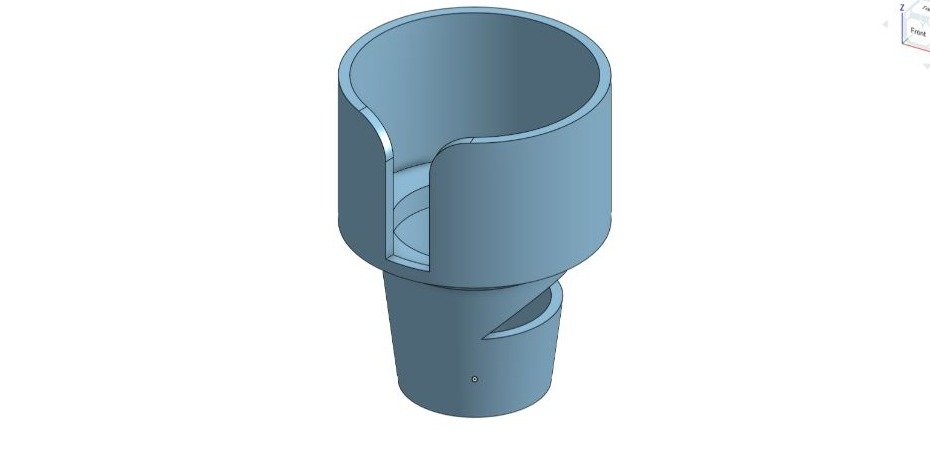
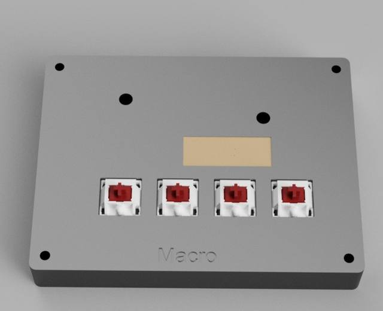
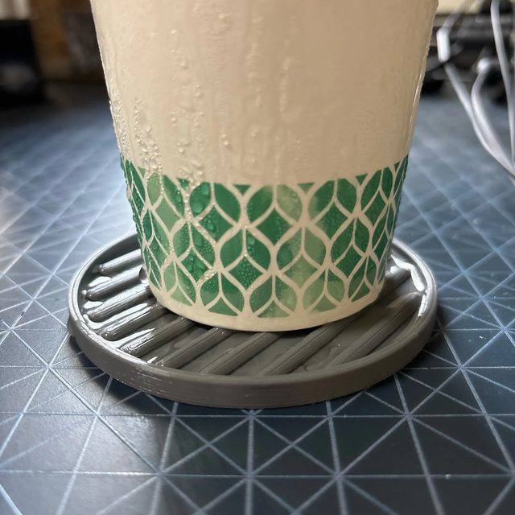
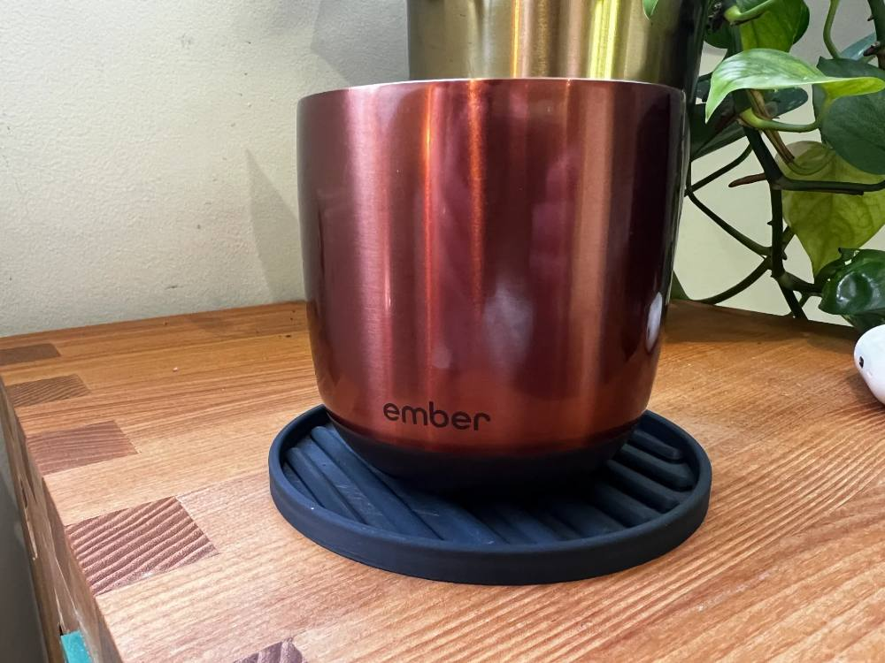
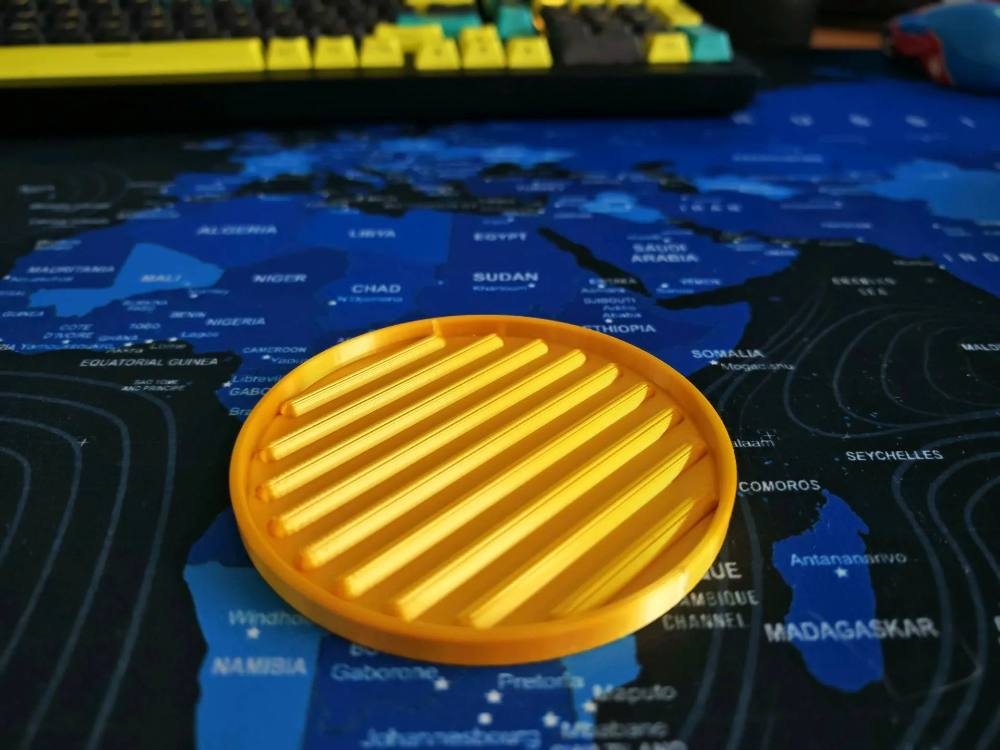
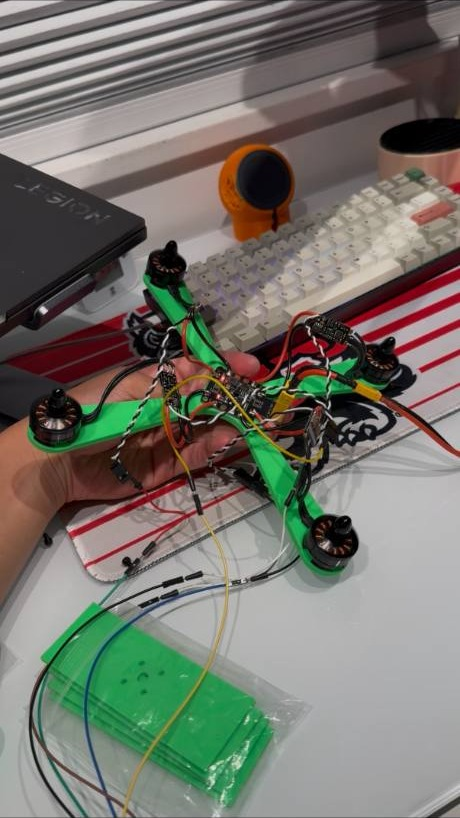
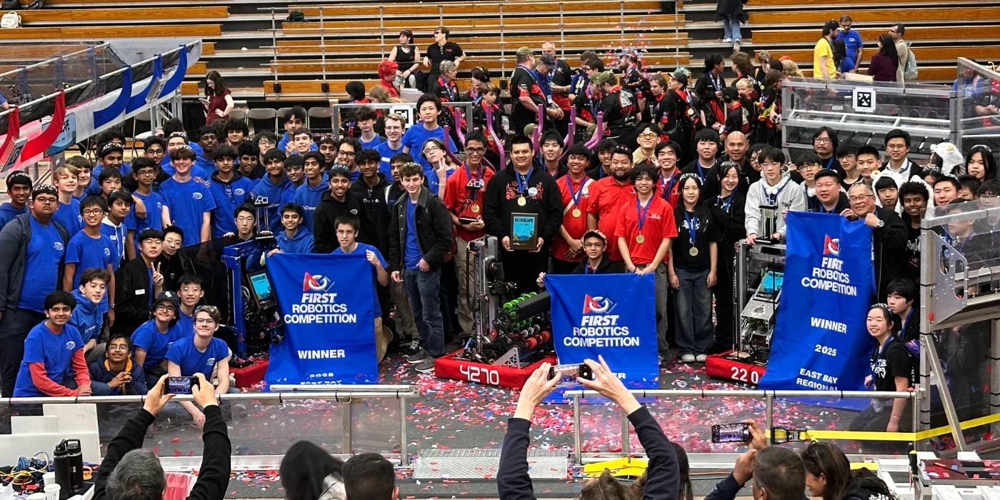
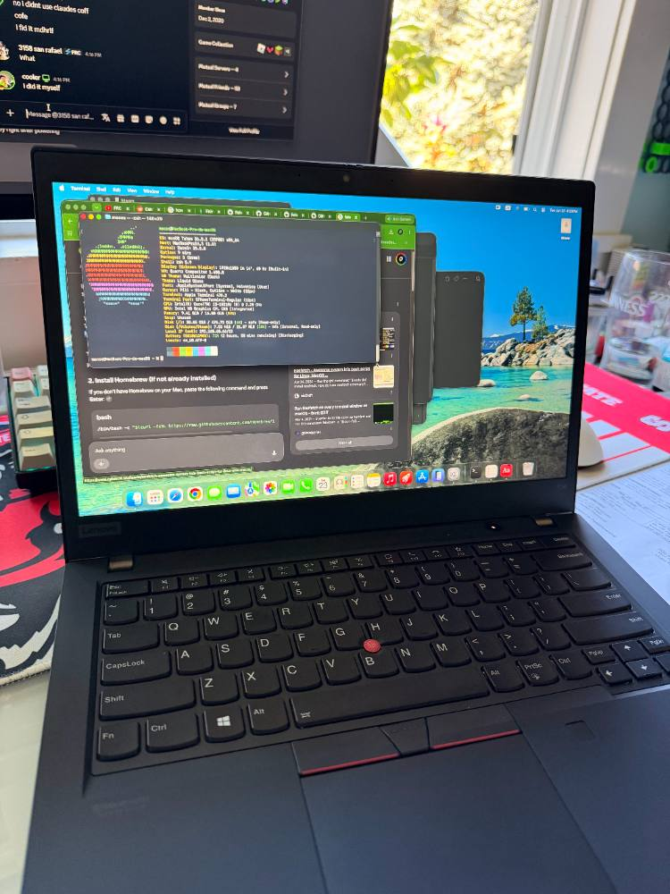
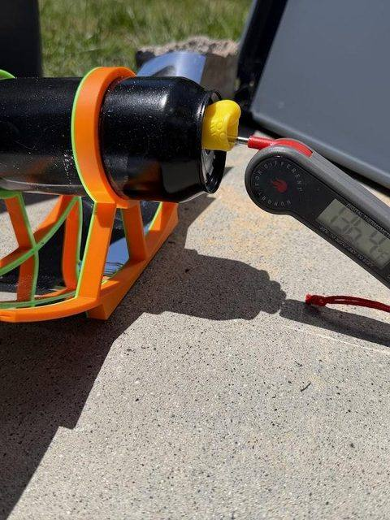

Yeti Tumbler Cup-Holder Adapter
A cup-holder adapter for a Yeti tumbler, modeled in Onshape.

Former Fabrication Lead & Team Captain, FIRST Robotics. Building small, useful things out of PCBs, firmware, CAD and 3D Printing.
San Francisco Bay Area, CA
Mechanical Engineering student at Diablo Valley College
cyberekw@gmail.com ·
github.com/earth325 ·
linkedin.com/in/ethankwu ·
Resume ↗
I’m a Mechanical Engineering student at Diablo Valley College, pursuing an Associate of Science in Mechanical Engineering (Engineering–Transfer), with anticipated completion in August 2028. Most of the last four years have run through my FIRST Robotics team, splitting time between the build room and the classroom. I’ve prototyped a patent-pending project alongside professional engineers, and outside of build season I teach CAD and engineering basics to students in grades 4 through 7 through FIRST Lego League, alongside my own personal projects.
A macro pad built from scratch, board, case, and code, for one-touch app shortcuts, mute toggles, and workspace automation. Cherry MX switches, a small OLED display, and a XIAO RP2040 running KMK firmware to act as an HID.





Live BART arrivals and departures for the Castro Valley station on a small ESP32-based touch display. Pulls real-time transit data and puts it on a desk, no phone required.

A drink coaster designed to catch condensation before it pools, inspired by one I saw in Japan. Published free on MakerWorld and printed by thousands of strangers.
1.1M impressions · 44k views · 3.2k downloads · 2.6k prints · 140 boosts





A BLDC motor tester for a quadcopter build: four sliders mapped individually to the ESP32 GPIOs drive each 2204 motor independently, with a full test routine and an emergency stop for safely validating wiring before a flight.



Four years on the team, two roles. I started as Fabrication Lead, machining and assembling the robot itself, then moved into Team Captain, running build season and a $40,000+ budget for a 30-person team along with designing and wiring.
East Bay — Regional Champions · Imagery Award
Sacramento — District Winner · Creativity Award · Regional Finalists ×2



A cup-holder adapter for a Yeti tumbler, modeled in Onshape.

A Lenovo ThinkPad running macOS Tahoe as a Hackintosh.

A solar cooker prototype with a 3D-printed parabolic mirror mount, testing outdoors.

I’m an intern at Hestus, a San Mateo startup building “Mechanical Intelligence” — a purpose-built AI model for mechanical engineering. I stress-test their Sketch Helper autocomplete assistant inside Autodesk Fusion, hunting down bugs and edge cases before they reach the 5,000+ engineers using it, and I tag data points that help teach the model what good, manufacturable design looks like. It’s hands-on QA for AI that designs hardware — breaking the tool on purpose so engineers can trust it. Hestus raised a $7.4M seed round in October 2026, led by Insight Partners.
Over 36 hours with little to no sleep at Cal Hacks 13.0 at the San Francisco Palace of Fine Arts, my team built StudBud, an AI-powered study companion to fix studying broken by LLMs solving everything. We used a camera setup with a Raspberry Pi running OpenCV and integrated the Anthropic Claude API to process coursework, generate interactive materials, and let users chat directly with their actual syllabus with real citations. We integrated Tudor into the interface, powered by Sonnet 4.5, to guide and give pointers to a problem as opposed to handing over answers. Building virtual infrastructure is not typically my forte, and I learned AI integration, backend/frontend design, and prompting along the way.
I used barebones ESP-IDF TWAI (CAN bus) driver code to tap an ESP32 into my 2015 Prius, successfully parsing raw powertrain hex data into the serial monitor, to get back into low-level CAN bus networking from FIRST Robotics motor controllers and see what the Prius hybrid ECU is doing behind the scenes. Flashing a more complex script to host a live local web dashboard froze the data stream, and mistakenly swapping CAN High and CAN Low wires while the bus was active triggered a CHECK HYBRID SYSTEM alarm and locked up the car computer. I disconnected the 12V auxiliary battery with a 10mm wrench to force a hard ECU reset, and the car survived. The root cause was software architecture — async web server code colliding with CAN bus polling timing — so I went back to the verified barebones script and merged the async server logic back one function at a time, feature by feature: Engine RPM packet, High Voltage Battery State of Charge (SOC) headers, and hybrid system amperage.
I spent a weekend at UC Berkeley for a CAD challenge with a biomedical engineering theme. I collaborated with complete strangers, flexing my design skills.